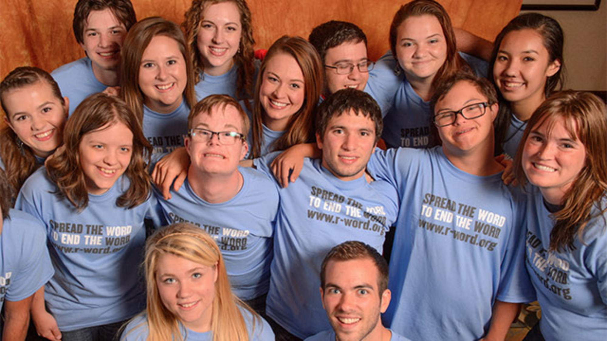
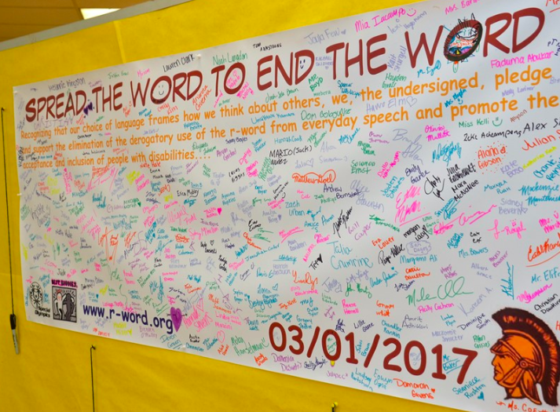
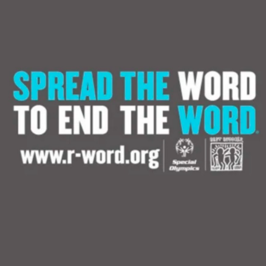
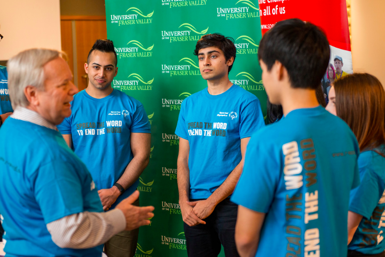
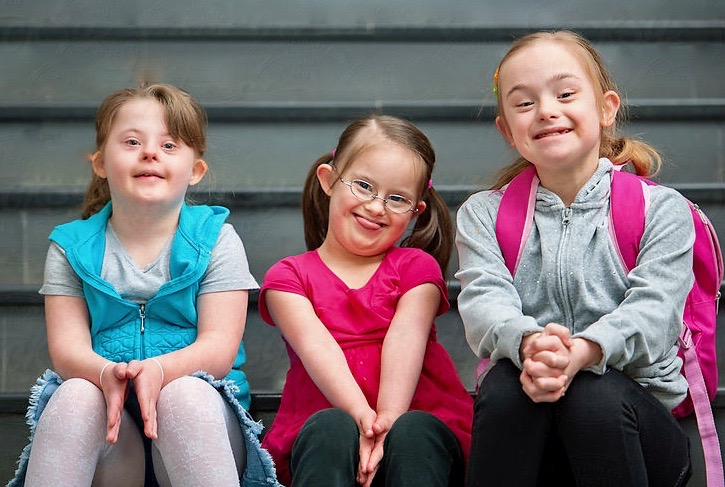

About the Organization
The Spread the Word to End the Word Organization began in February 2009. The purpose is to stop the use of the "R" word across the United States. Using this word is rude and dehumanizing to those with special needs. Not using the words makes a friendlier and more welcoming environment for people with intellectual disabilities.
Why I Feel Passionate About It
Personally, it really bothers me when people use the "R" word. I have a cousin who is on the autistic spectrum, and when people use that word as a joke, I can't help but think of him, who is not at all responsible for the situation he is in. I have always been involved in special olympics programs since elementary school, and believe it is important to spend time with people. This year, I am in Blue Gold at Padua, and participate in different volunteer work throughout the year!
   
What YOU Can do!
Many schools all throughout the United States hold an event in March every year. The program varies from school to school, but usually involves an assembly to learn more about the cause, tee shirt selling, and pledging. In my schools, there has always been a large banner for the whole school to sign, pledging to never use the "R" word. To make an online pledge, go to this website!
There's lots of things you personally can do to help this cause. One organization, Friendship Circle, shares 10 different ways to help. Some of these include making a blog, sending an email, sharing your story, and finding a new word. The r-word has tons of synonyms that are much less offensive, and this website gives 225 alternatives! This cause is very important to me and I beleieve everyone should be a part of it.